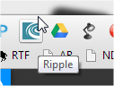
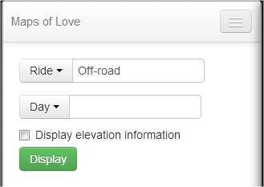

This page explains how to use the Chrome browser to view the Maps of Love online demo version. The demo runs under Chrome on Windows. It should also work on the Mac OSX version of Chrome. To return to the home page click here.
Install the Ripple Emulator
The Ripple Emulator lets you display mobile web sites and cross-platform web applications in your browser. You can install it from the Chrome App Store.
Launch the App
This section describes how to launch the app and configure the Ripple Emulator
- Launch the Maps of Love online demo.
- In the Chrome tool bar, click the Ripple icon.
 - In the Ripple Mission control, click Enable.
The first time you launch the app, Ripple displays the Are you ready for this page. - In the Are you ready for this page, choose Adobe Cordova/PhoneGap(1.0.0).
- In the Devices list, choose a device. I recommend Generic - HVGA (320X480).
Using the App
This section describes how you can use the demo apps features.
- Download the offroad.gpx map file to your PC.
- In the Demo App's start page, choose the Off-road and Day 1.
 - Click Display.
- In Ripple's Navigation Simulator, click the Choose File button.
- On your PC, locate offroad.gpx.
- Locate your simulated position. In the Demo app, click the Show me where I am.
- Use the Speed list, to select a playback speed and click Go.
- In the demo app, expand the Nav bar.
- Click Start tracking button to track your position.